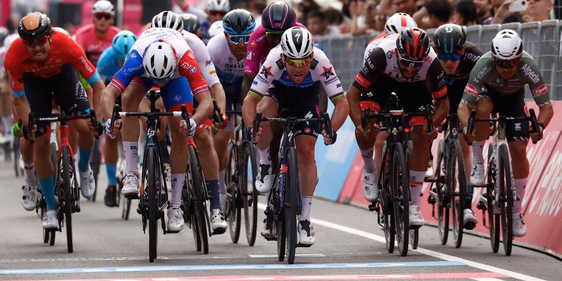
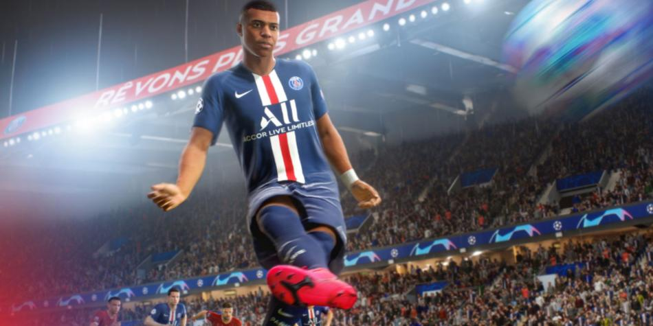
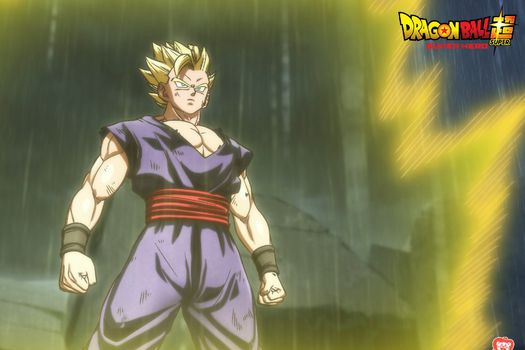
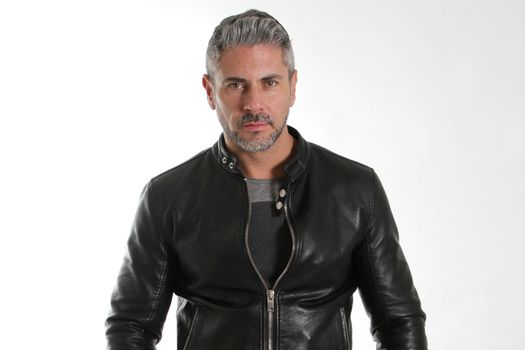
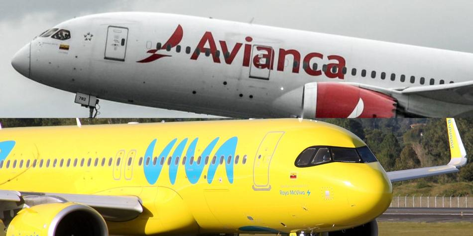
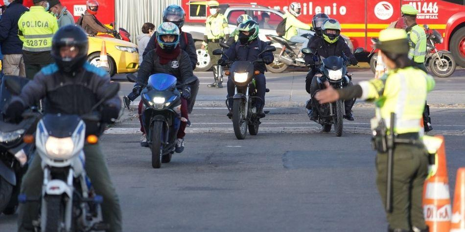

Blog De Noticias


Las noticias independientemente del tema del día, del lugar en que se vive;
tienen una gran importancia para la vida
misma de las personas,se da por el conjunto de medios de comunicación que nos informan sobrelos sucesos más
destacados,gracias a las noticias podemos saber que ruta tomar hacía nuestro trabajo, saber cuando es necesario
ajustar el reloj por el horario de verano, conocer la situación en cuestión de inseguridad en el país, entre muchas
otras cosas de la vida misma, dos sectores son esenciales; la tecnología y las inversiones.
Una de las características de la tecnología es que constantemente esta en proceso de innovación y se dan cambios
muy importantes en poco tiempo, una de las funciones más importantes de la tecnología es hacer de la vida más sencilla
y confortable, por ello si estamos al pendiente de las noticias podemos obtener beneficios en el corto plazo; ejemplo de
ello Whatsapp, la aplicación de comunicación textual por excelencia que a estado trabajando en un conjunto de cambios como
las llamadas, si estamos al pendiente de las noticias de WhatsApp lograremos saber sus nuevas funciones y aprovecharlas de
inmediato, así con todos los artículos tecnológicos que como el smartphone ya no es un lujo, sino una necesidad.

Al colombiano Fernando Gaviria, del UAE Emirates, no le alcanzó el empuje para pasar la línea de meta antes que el francés
Arnaud Démare (GFC) y quedó de segundo en la quinta etapa del Giro de Italia.
El pedalista francés arrancó de atrás y sobrepasó a todos sus competidores en el esprint definitivo. Gaviria, quien venía de
ser tercero en la etapa tres del Giro, quedó molesto porque tenía grandes oportunidades de quedarse con el triunfo. No en vano,
golpeó el manubrio.
Con esta victoria, el francés suma su sexto triunfo en la ronda italiana y el número 85 en su palmarés. La clasificación general la
sigue liderando el español Juan Pedro López, que entró en meta junto al pelotón y en la sexta etapa lucirá de nuevo la maglia rosa.
Se avecina la final que paralizará al mundo. El ultraofensivo Liverpool enfrentará al milagroso Real Madrid en París para definir
al nuevo campeón de la Champions League. Duelo para alquilar balcón.
Partido en Barranquilla, Colombia, entre el selecionado nacional y el boliviano por eliminatoria al Mundial Qatar 2022.
En medio de la previa, James Rodríguez encendió las redes sociales al tomar partido entre ambos conjuntos. Por un lado,
está el equipo que tiene como gran figura a su amigo Luis Díaz. Por el otro, está el club que tanto ama.
“Mirá que Liverpool está andando por un buen momento y tiene jugadores fantásticos. Está Luchito Díaz ahí.
Es una parte que jala. Quiero que quede campeón 'Lucho'”, dijo en un en vivo por la plataforma 'Twitch'.
Aunque manifestó claramente que desea ver campeón al guajiro, no pudo ocultar el cariño que siente por la institución merengue.
“Quiero que Lucho gane, pero jugué en el Real Madrid, tengo excompañeros allí y quiero mucho
al club. Entonces no sé”, mencionó.
Real Madrid y Liverpool se medirán el próximo sábado 28 de mayo en el Stade de France, de París.

Fifa, una de las franquicias de videojuegos más populares en el mundo, cambiará su nombre por EA Sports FC
en honor al desarrollador del juego, Electronics Arts Inc., dado que no logró llegar a un nuevo acuerdo de licencia
con el organismo mundial del futbol.
Las negociaciones entre los dos fueron polémicas y se hicieron públicas en octubre cuando un ejecutivo de EA escribió
un comunicado en la que decía que la compañía estaba considerando un cambio de nombre.
El iPod de Apple fue presentado hace aproximadamente 20 años brindando a los usuarios la posibilidad de llevar
su música consigo a todas partes, concepto que revolucionó la industria.
El iPod Touch, producto táctil que salió a la venta por primera vez en octubre de 2001, era el último dispositivo
de esta línea que se mantenía a la venta, ahora Apple anunció que lo descontinuaría su producción por lo que permanecerá
a la venta hasta que se agoten las existencias.
"Hoy, la experiencia de llevar la biblioteca de música de uno al mundo se ha integrado en la línea de productos de Apple,
desde iPhone y Apple Watch hasta iPad y Mac, junto con el acceso a más de 90 millones de canciones y más de 30,000 listas
de reproducción disponibles a través de Apple Music", explicó la compañìa en un comunicado.

“Dragon Ball Super: Super hero” es la nueva película de la exitosa franquicia de anime de fama mundial, la cual llegará
a cines en todo el mundo a partir de este verano.
La historia está ubicada luego de que Goku destruyó en su momento al Ejército del Listón Rojo. Ahora, ciertos individuos han
decidido continuar con su legado y han creado a los androides definitivos: Gamma 1 y Gamma 2. Estos dos androides se autoproclaman
“superhéroes” y deciden atacar a Piccolo y a Gohan. ¿Cuál es el objetivo del Nuevo Ejército del Listón Rojo? Ante un peligro inminente,
llega el momento del despertar del Superhéroe.
“Por más de 30 años, la franquicia Dragon Ball ha deleitado a fanáticos de todo el mundo que han seguido a los más grandes guerreros
que defienden la Tierra de las fuerzas diabólicas”, dijo Rahul Purini, Presidente de Crunchyroll. “Estamos emocionados de poder asociarnos
con Toei Animation para ofrecer el último capítulo de Dragon Ball Super a la legión de súper fans deseosos de continuar la aventura y aumentar
los espectadores de anime que lo están descubriendo por primera vez”.
Crespo fue denunciado a finales de 2020 por su hija Valentina Crespo y desde entonces se comenzó el proceso penal en contra del
actor de producciones como “El señor de los cielos”.

Ricardo Crespo es un actor y modelo mexicano, quien participó en reconocidas producciones
de televisión como “Control Z” de Netflix, “El señor de los cielos” y “La rosa de Guadalupe”.
El también ex miembro de la agrupación Garibaldi fue sentenciado este lunes 9 de mayo a 19 años
de cárcel por el delito de abuso sexual agravado en contra de su propia hija.
Crespo fue denunciado a finales de 2020 por su hija Valentina Crespo y desde entonces se comenzó
el proceso penal. La denuncia fue puesta por la madre de la menor ante la Fiscalía General de Justicia
de la Ciudad de México, luego de que la joven le contara los hechos.

A través de las recientes inversiones realizadas por los accionistas de Avianca y Viva, el Grupo Abra también
tendría el 100 por ciento de los derechos económicos de las operaciones de Viva en Colombia y Perú, pero no la controlaría, indicaron.
Las aerolíneas mantendrán sus marcas, talento, equipos y cultura de manera independiente, mientras se benefician de mayores
eficiencias e inversiones dentro de un negocio común, indicaron las directivas de la compañía, quienes también advirtieron que
los clientes se beneficiarían de las mejores tarifas, más destinos, más frecuencias de vuelos, conexiones más prácticas, y la
posibilidad de ganar y usar puntos de LifeMiles y Smiles, lo programas de lealtad de las aerolíneas líderes en el mercado.
Así mismo, habrá un préstamo de dinero a SkyAirline de Chile a cambio de una cuota minoritaria de acciones en Abra.
“Nuestra visión es crear un grupo de aerolíneas capaz de enfrentar los desafíos del siglo XXI y que mejore la experiencia de volar
para nuestros clientes, empleados, aliados y comunidades en donde operamos. Nuestros clientes podrán disfrutar de mejores beneficios
y acceso a productos y servicios superiores", explicó Roberto Kriete.

Las ventas de motocicletas nuevas en Colombia siguen disparadas. Así se desprende de un informe dado a conocer por la Andi y Fenalco,
citando información del Registro Único Nacional de Tránsito (Runt), que indica que en los primeros cuatro meses de 2022 se registran 281.055
motos nuevas vendidas.
El reporte destaca que, en lo corrido del año, este indicador crece 32,5 % frente al año pasado y 92,3 % en comparación con el mismo periodo de 2020.
En abril se matricularon en total 66.716 unidades de motocicletas, con lo que se constituye en el segundo mes con mejor comportamiento de ventas en lo
que va corrido del año. El mejor mes fue febrero en el que se registraron 74.825 unidades vendidas. Con estas cifras se puede deducir que, en promedio,
en Colombia se venden 2.340 motos al día.
La marca de mayores ventas en los cuatro meses del año es Bajaj, seguida por Yamaha y AKT. La compañía india consolidó su crecimiento al reportar en
las ventas de abril un total de 11.367 unidades comercializadas, con lo cual consolidó su dominio al registrar 38,7 % más que las de 2021,
es decir, el 17 % del ponqué, de acuerdo con el informe.
Yamaha, por su parte, aumentó sus ventas el 14,8 %, con 10.594 unidades de motos vendidas en abril y se queda con el 16 % de la participación del mercado,
mientras que AKT acumula 9.819 unidades para un enorme crecimiento de 43,3 %.
Un escalón más abajo se sitúa Suzuki, con 8.175 unidades matriculadas; seguida por Victory, con 7.094 motos vendidas.
Otro de los datos que resalta el informe indica que, por segmentos, el de mayor crecimiento fue el de cilindrada de más
de 180 c.c., con un aumento de 48,6 % comparado con abril del año pasado.